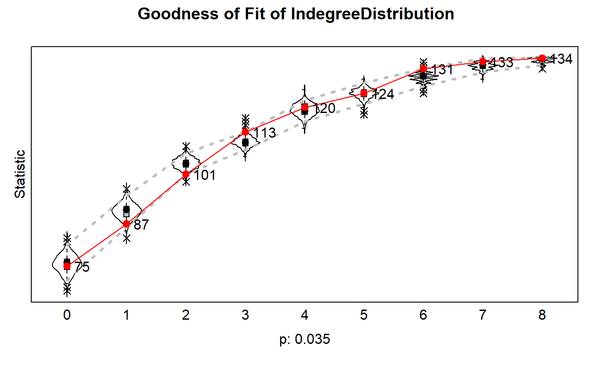

15 Stochastic Actor Oriented Models (SAOMs)
Place a header at the top of your script that tells you what you called it, what it accomplishes, etc.
#################################################
# What: Stochastic Actor Oriented Models (SAOMs)
# Created: 05.16.17
# Revised: 02.16.22
#################################################This lab introduces the fourth of four statistical models designed for social network data: stochastic actor-oriented models (SAOMs). The goal of SAOMs is to model real-world data on patterns of ties and behaviors and to identify a set of social processes that most likely reflect actor decisions. SAOMs are similar to exponential random graph models (ERGMs) in the sense that they assume that the observed network structure is, in part, a function of local patterns of ties, sometimes called micro-configurations (e.g., closed triads), that reflect endogenous social processes. Like ERGMs they test whether a particular configuration occurs more frequently than one would expect given the other configurations included in the model. They differ from ERGMs in that they are designed for longitudinal social network data and explicitly model the choices of actors, who “are assumed to control their outgoing ties and to make changes in these ties according to short-term goals and restrictions” (Tom Snijders and Johan H. Koskinen. 2013). Consequently, they are designed for directed data but it is valid to leverage these for undirected networks.
The basic approach for estimating a SAOM is similar to that of an ERGM: You first hypothesize as to what endogenous social processes gave rise to a particular network’s global properties, and then build a model that takes these and other factors into account. Local processes are operationalized in terms of the various micro configurations found within a network, while exogenous factors, such as race, gender, religious affiliation, and age, as well as other networks, are modeled in order to capture various social processes. SAOMs use a panel data approach, which means that each network (i.e., at each time point) must include the same number and set of actors. This can get tricky when actors enter or leave a network; in such situations we need to introduce structural zeros in order to indicate that it is not possible to form or maintain ties with those actors. Finally, several more sophisticated approaches exist in which analysts can examine the co-evolution of networks and actor attributes (e.g. behavior), or the co-evolution between two or more networks, but those are beyond the scope of this exercise.
As you learn more about SAOMs, remember they have several core assumptions (Snijders, van de Bunt, and Steglich, pg. 4-6):
15.1 Core Assumptions
- The underlying time parameter t is continuous. This assumption allows researchers to represent dependencies between network ties, such as when a network tie is formed based on the presence of other ties.
- The dynamic, changing network can be interpreted as the result of a Markov process (i.e., at any point in time, the state of the network probabilistically determines its further evolution, and there are no additional effects from the earlier past. All relevant information is included in the current state).
- Actors control their outgoing ties (hence, the name “actor-based models”).
- Actors have full information about the network and the other actors.
- No more than one tie changes at any moment; that is, tie changes are not coordinated, and depend on each other only sequentially, via the changing configuration of the whole network.
Additional Assumption
- Ties are not brief events, but rather states with a tendency to endure over time; in other words, ties gradually change and do not resemble events such as a meeting (or tweeting, commenting) at a single point in time. For instance, Snijders, van de Bunt, and Steglich explain, “ties are supposed to be dyadic constituents of relations such as friendship, trust, or cooperate, directed from one actor to another.”
15.2 Brief Overview of Statistical Procedure
Researchers use simulations implemented in R software package, RSiena (Ripley et al., 2020), to try to reproduce features from one observation to the next. Analysts represent empirical, social networks and attributes as dynamically changing variables over discrete time waves (attributes can be constant), whereby the statistical modeling, using method of moments, seeks to minimize the differences between expected values and observed values (T. A. B. Snijders, 1996, 2005; Warren, 2016). Because one cannot obtain expected values directly, SAOMs leverage the Robbin’s Monro Markov-chain Monte Carlo algorithm (MCMC) to run simulations about tie changes between time points. This simulates data between two observations by interpreting an empirical network as the culmination of a series of unobserved changes based on the decisions of actors (Elmer et al., 2017; T. Snijders et al., 2010; Warren, 2016). At discrete time moments between waves, each actor assesses (i.e., controls) all possible potential changes of an outgoing tie and an attribute to evaluate if they should create, drop, maintain the tie, or whether they should increase, decrease, or keep an attribute at a previous level (Elmer et al., 2017). The change process occurs in two, stochastic sub-processes determined by two functions. The rate function indicates the frequency by which actors execute a “mini-step” (i.e., how many changes), whereas the objective function represents the probability that an actor will change a tie given a chance (i.e., what changes) (Elmer et al., 2017). The actors are myopically rational, in the sense that they maximize utility with stochastic error, as well as condition their choices on the current network structure, rather than attempt to make predictions about the future network structures (Warren, 2016; Ripley et al., 2020).
The simulations identify models that minimize the divergences between the simulated data and observed data by establishing parameter values as weights for each factor across all waves. This permits analysts to evaluate network statistics built into the model then taking the parameter weights from the simulations and by running additional simulations, while holding parameters constant to estimate covariance among the factors, and the uncertainty associated with each parameter estimate. In other words, one can test hypotheses about actor tendencies while controlling for others.
Researchers can examine model using goodness of fit (GOF) tests. This process helps one assess the extent to which observed data is compatible with the models developed and fitted for a study. The GOF test, like with ERGMs, uses “common” structural tendencies in social networks, implemented as a menu of “auxiliary statistics,” to evaluate a model’s ability to account for them “in general” (Lospinoso & Snijders, 2019; Ruth M. Ripley et al., 2021). Examples of such tendencies include degree distributions, various forms of triads (i.e., triad census), and geodesic distances. This procedure takes one of these auxiliary statistics, which are not explicitly included in a model, and compares its observed value in a network with its estimated conditional distribution generated by the simulations during analysis. While there is no “rule” as to what an auxiliary statistic’s p-value should be, it is recommended that they should be near or above 0.05. When an auxiliary statistic’s p-value is well below 0.05, it suggests the constructed model is of poor fit in the sense that it does not account well for certain patterns or tendencies that it should and that one should consider revising the model (e.g., extending the model with certain triads). Conversely, when an auxiliary statistic’s p-value is above that threshold, it suggests the model is not ignoring potentially important network patterns that reflect social processes. Finally, the GOF procedure offers a Mahalanobis distance (lower is better) for each auxiliary statistic to give researchers an idea about which model extensions/changes could produce a better fit (Lospinoso & Snijders, 2019; Ruth M. Ripley et al., 2021).
15.3 General Steps in R
SAOMs in R (RSiena):
- Import network and attribute data.
- It is preferable to import the main component (weak component) of the observed network only in order to account for the assumption that actors have “full information” on the other actors in the network, and that each actor has a chance to form a tie with all others.
- Prep data - Do I have enough information? (See pg. 15 of the manual for exceptions)
+ Ensure you have at least two waves but less than 10.
+ It is preferable that you have at least 20 actors in your network but no more than several 100.
- The total number of changes should be “enough.” According to the RSiena’s manual, 40 changes over all successive panel is on the low side. However, between any pair of consecutive waves you do not want “too many” changes because this would call into question the assumption that ties between waves are gradually changing (you can use Jaccard index – you want higher than .3, proportion greater than .6 is preferable). (Note: We won’t do this here.)
- Establish covariates as constant or varying. Here we will keep things simple and use constant covariates.
- Set attributes to vertices (if necessary).
- Create “structural zeros” files (if necessary).
- The total number of changes should be “enough.” According to the RSiena’s manual, 40 changes over all successive panel is on the low side. However, between any pair of consecutive waves you do not want “too many” changes because this would call into question the assumption that ties between waves are gradually changing (you can use Jaccard index – you want higher than .3, proportion greater than .6 is preferable). (Note: We won’t do this here.)
- Explore data
- Visualize networks to refine hypotheses.
- Calculate descriptive statistics, produce histograms for distributions of stats of interest, etc.
- Specify model - Based on theory and exploratory analysis, am I focusing on structural evolution, behavior, or co-evolution?
- Models for directed data should include outdegree (tendency to have ties at all), reciprocity, transitivity or some triadic effect, such as a three-cycle (pg. 10 of manual).
- Obtain converged model (i.e., overall convergence ratio below .20 is ideal (<.25 is fine for publications) and all variables under .1). When comparing models, you want the model with the lowest ratio.
- Users should start with endogenous factors.
- Users can utilize the
prevAnsparameter to help with convergence if initial model does not converge. - Analysts can use Wald-Type Tests to determine statistical significance (see Ripley et. al (2020 pg. 92))
- Run goodness of fit (GOF) diagnostics
- At this point you can obtain Mahalanobis indices (the lower, the better). However, it is unclear how reliable these are.
- Check GOF for degree distribution, triad census, and geodesic distance, etc.
- You can test for time heterogeneity – One can see if there are issues regarding time heterogeneity by looking at the p-values under the test’s, “Joint Significance Test of Heterogeneity” section. Hopefully, one will get an insignificant value here. If not, one should start looking at including time dummies for effects with the highest chi-square score and repeat that process the convergence ratio for all variables is less than .10. Researchers can control for all time points for a particular variable, or specific time points, if they feel something is occurring at that particular point in time/wave. (Note: We won’t do this here.)
- At this point you can obtain Mahalanobis indices (the lower, the better). However, it is unclear how reliable these are.
- Interpret and report results. For example, you can convert results to odds ratios to help with interpretation.
15.4 Exploratory Analysis
Remember to set your working directory or set up a project before getting started. We will start by exploring the data so go ahead and load the sna and network packages.
15.4.1 Load Libraries
library(sna)
library(network)At this point you should be familiar with the “Anabaptist” data set. In case you don’t remember, the data set includes 67 actors, 55 who were sixteenth century Anabaptist leaders and 12 who were prominent Protestant Reformation leaders (e.g., Martin Luther, John Calvin, Ulrich Zwingli, Martin Bucer, and Philip Melanchthon) that had contact with and influenced some of the Anabaptist leaders included in this data set. These data build on a smaller data set (Matthews et al., 2013) that did not include some leading Anabaptist leaders, such as Menno Simons, who is generally seen as the “founder” of the Amish and Mennonites.
For the exploratory analyses portion of this exercise, we will use the network at a single snapshot in time. We will import our “waves” or time slices later when we begin building our models. So for now, we need to import our static network and our attributes.
15.4.2 Import Data
anabaptists.net <- as.network(
read.paj("data/Anabaptist Leadership Network 67.net"),
directed = FALSE)We’ve stored our attributes as binary variables. We will bring them in as use the as.matrix() function to put them in a usable format. Once we’ve imported the attributes, we will use the set.vertex.attribute() function to set them as vertex attributes.
attributes <- read.csv("data/Anabaptist Attributes67.csv",
header = TRUE,
row.names = 1,
check.names = FALSE)
set.vertex.attribute(anabaptists.net, 'believers', attributes[, 1])
set.vertex.attribute(anabaptists.net, 'violent', attributes[, 2])
set.vertex.attribute(anabaptists.net, 'munster', attributes[, 3])
set.vertex.attribute(anabaptists.net, 'apocalyptic', attributes[, 4])
set.vertex.attribute(anabaptists.net, 'anabaptist', attributes[, 5])
set.vertex.attribute(anabaptists.net, 'melchiorite', attributes[, 6])
set.vertex.attribute(anabaptists.net, 'apocviolent', attributes[, 7])
set.vertex.attribute(anabaptists.net, 'apocnonviolent', attributes[, 8])
set.vertex.attribute(anabaptists.net, 'nonapocviolent', attributes[, 9])15.4.3 Network Plots
Let’s begin with some basic plots.
gplot(anabaptists.net,
label = network.vertex.names(anabaptists.net),
usearrows = FALSE,
label.col = "black",
label.cex = 0.6,
vertex.col = "light gray",
vertex.cex = 1,
main = "Anabaptist Network")
Go ahead and re-position the labels.
gplot(anabaptists.net,
label = network.vertex.names(anabaptists.net),
usearrows = FALSE,
label.col = "black",
label.cex = 0.6,
label.pos = 5,
vertex.col = "light gray",
vertex.cex = 1,
main = "Anabaptist Network")
Next, let’s color the nodes by a few attributes.
# Anabaptists
gplot(anabaptists.net,
label = network.vertex.names(anabaptists.net),
usearrows = FALSE,
label.col = "black",
label.cex = 0.6,
label.pos = 5,
vertex.col = attributes[, 5],
vertex.cex = 1,
main = "Anabaptists")
# Münster rebellion
gplot(anabaptists.net,
label = network.vertex.names(anabaptists.net),
usearrows = FALSE,
label.col = "black",
label.cex = 0.6,
label.pos = 5,
vertex.col = attributes[, 4],
vertex.cex = 1,
main = "Munster Rebellion")Here’s another way to do something similar by creating vectors of attributes.
baptism.vec <- attributes[, 1]
violence.vec <- attributes[, 2]
munster.vec <- attributes[, 3]
apocalyptic.vec <- attributes[, 4]
anabaptist.vec <- attributes[, 5]
melchiorite.vec <- attributes[, 6]
y1525.vec <- attributes[, 10]
anabmunst.vec <- anabaptist.vec + munster.vec
anabmelch.vec <- anabaptist.vec + melchiorite.vecWe can change some of the default colors to help us explore the network visually.
# Change the default colors
baptism.vec[baptism.vec == 1] <- "dark gray"
baptism.vec[baptism.vec == 0] <- "white"
violence.vec[violence.vec == 1] <- "dark gray"
violence.vec[violence.vec == 0] <- "white"
munster.vec[munster.vec == 1] <- "black"
munster.vec[munster.vec == 0] <- "white"
apocalyptic.vec[apocalyptic.vec == 1] <- "dark gray"
apocalyptic.vec[apocalyptic.vec == 0] <- "white"
anabaptist.vec[anabaptist.vec == 1] <- "dark gray"
anabaptist.vec[anabaptist.vec == 0] <- "white"
melchiorite.vec[melchiorite.vec == 1] <- "dark gray"
melchiorite.vec[melchiorite.vec == 0] <- "white"
anabmunst.vec[anabmunst.vec == 2] <- "black"
anabmunst.vec[anabmunst.vec == 1] <- "dark gray"
anabmunst.vec[anabmunst.vec == 0] <- "white"
anabmelch.vec[anabmelch.vec == 2] <- "black"
anabmelch.vec[anabmelch.vec == 1] <- "dark gray"
anabmelch.vec[anabmelch.vec == 0] <- "white"Let’s visualize the entire network and use various attributes as visual cues.
# First get coordinates
set.seed(8675309)
coords <- network.layout.kamadakawai(anabaptists.net,
layout.par = NULL)
gplot(anabaptists.net,
usearrows = FALSE,
displayisolates = TRUE,
displaylabels = F,
vertex.col = anabaptist.vec,
coord = coords,
vertex.cex = 1,
gmode = "graph",
main = "Anabaptist Network")
legend(x = -3.0,
y = -3.1,
legend = c("Yes","No"),
pch = 21,
pt.bg = c("dark gray", "white"),
pt.cex = 2,
cex = 1.2,
bty = "n",
ncol = 1)gplot(anabaptists.net,
usearrows = FALSE,
displayisolates = FALSE,
displaylabels = F,
vertex.col = melchiorite.vec,
vertex.cex = 1,
gmode = "graph",
coord = coords,
main = "Anabaptist Network (Mechiorites)")
legend(x = -3.0,
y = -3.1,
legend = c("Yes","No"),
pch = 21,
pt.bg = c("dark gray", "white"),
pt.cex = 2,
cex = 1.2,
bty = "n",
ncol = 1)
gplot(anabaptists.net,
usearrows = FALSE,
displayisolates = FALSE,
displaylabels = F,
vertex.col = munster.vec,
vertex.cex = 1,
gmode = "graph",
coord = coords,
main = "Anabaptist Network (Munster)")
legend(x = -3.0,
y = -3.1,
legend = c("1","0"),
pch = 21,
pt.bg = c("black", "white"),
pt.cex = 2,
cex = 1.2,
bty = "n",
ncol = 1)gplot(anabaptists.net,
usearrows = FALSE,
displayisolates = FALSE,
displaylabels = F,
vertex.col = anabmelch.vec,
vertex.cex = 1,
gmode = "graph",
coord = coords,
main = "Anabaptist Network (Anabaptist-Melch)")
legend(x = -3.5,
y = -3.1,
legend = c("2","1", "0"),
pch = 21,
pt.bg = c("black", "dark gray", "white"),
pt.cex = 2,
cex = 1.2,
bty = "n",
ncol = 1)
Now, remember that we are working with undirected data here, so we cannot measure reciprocity and triad census in a meaningful way.
15.5 Data and Setup for SAOMs in RSiena
15.5.1 Load and Detach Libraries
First detach sna library; it might conflict with some of the libraries for SAOMs.
detach(package:sna, unload=TRUE)Next, let’s load libraries for this exercise (you will likely have to install these first). The main package for SAOMs is RSiena.
library(RSiena)
library(snow) # Helps with computation.
library(rlecuyer) # This package's main purpose is to enable the use of this random number generator in parallel R applications.
library(xtable) # Coerce data to LaTeX and HTML tables.
library(car) # (https://www.rdocumentation.org/packages/car/versions/3.0-5)15.5.2 Import and Format Data
We will now turn to our longitudinal data for SAOMs. Because we have actors who left the network at various times, we have to employ “structural zeros.” We load files the files for those actors who cannot form ties at particular times points and then we multiple by 10, which is the value that indicates such actors. Note the first one is empty - no ties.
st0s1525.mat <- as.matrix(read.paj("data/Anabaptists67-1525S0s.net"),
directed = FALSE) * 10
st0s1530.mat <- as.matrix(read.paj("data/Anabaptists67-1530S0s.net"),
directed = FALSE) * 10
st0s1535.mat <- as.matrix(read.paj("data/Anabaptists67-1535S0s.net"),
directed = FALSE) * 10
st0s1540.mat <- as.matrix(read.paj("data/Anabaptists67-1540S0s.net"),
directed = FALSE) * 10
st0s1545.mat <- as.matrix(read.paj("data/Anabaptists67-1545S0s.net"),
directed = FALSE) * 10Next, load actual networks (note that they are the same size even though size actually changes).
anab1525.mat <- as.matrix(read.paj("data/UnionGraph-1525.net"),
directed = FALSE)
anab1530.mat <- as.matrix(read.paj("data/UnionGraph-1530.net"),
directed = FALSE)
anab1535.mat <- as.matrix(read.paj("data/UnionGraph-1535.net"),
directed = FALSE)
anab1540.mat <- as.matrix(read.paj("data/UnionGraph-1540.net"),
directed = FALSE)
anab1545.mat <- as.matrix(read.paj("data/UnionGraph-1545.net"),
directed = FALSE)The next step is to add the two networks together representing each time slice.
t1525.mat <- anab1525.mat
t1530.mat <- anab1530.mat + st0s1530.mat
t1535.mat <- anab1535.mat + st0s1535.mat
t1540.mat <- anab1540.mat + st0s1540.mat
t1545.mat <- anab1545.mat + st0s1545.matYou can check them out to make sure there are only 0’s, 1’s, and 10’s (Note: Output not shown here).
table(t1525.mat)
table(t1530.mat)
table(t1535.mat)
table(t1540.mat)
table(t1545.mat)Bring in the attributes and establish them as constant covariates (i.e., unchanging attributes).
baptism <- coCovar(attributes[, 1])
violent <- coCovar(attributes[, 2])
munster <- coCovar(attributes[, 3])
apocalyptic <- coCovar(attributes[, 4])
melchorite <- coCovar(attributes[, 6])15.5.3 Structural Model
We will begin with a simple model. We need to set dependent variable for both a three and a four period SAOM.
anab03.net <- sienaNet(netarray = array(
c(t1530.mat, t1535.mat, t1540.mat),
# Determine the dimensions of the array
dim = c(67, 67, 3)
))
anab04.net <- sienaNet(netarray = array(
c(t1525.mat, t1530.mat, t1535.mat, t1540.mat),
dim = c(67, 67, 4)
))We can use the sienaDataCreate() function to define what network(s) we are going to analyze. The getEffects() function will create a list of all potential effects (i.e., structural configurations) in our dependent variable (i.e, network).
mydata03 <- sienaDataCreate(anab03.net)
myeff03 <- getEffects(mydata03)mydata04 <- sienaDataCreate(anab04.net)
myeff04 <- getEffects(mydata04)Use the effectsDocumentation() function to see what effects are available (should be an HTML in folder) for your models.
effectsDocumentation(myeff03)
effectsDocumentation(myeff04)Now let’s build out which structural effects we will include for each model, starting with the three wave model followed by the four wave model.
myeff03 <- includeEffects(myeff03,
transTriads,
gwesp,
density,
balance,
isolateNet) effectName include fix test initialValue parm
1 degree (density) TRUE FALSE FALSE -1.3701 0
2 transitive triads TRUE FALSE FALSE 0.0000 0
3 balance TRUE FALSE FALSE 0.0000 0
4 GWESP (#) TRUE FALSE FALSE 0.0000 69
5 network-isolate TRUE FALSE FALSE 0.0000 0 Now, start building the four wave effects.
myeff04 <- includeEffects(myeff04,
transTriads,
gwesp,
density,
balance,
isolateNet) effectName include fix test initialValue parm
1 degree (density) TRUE FALSE FALSE -1.69964 0
2 transitive triads TRUE FALSE FALSE 0.00000 0
3 balance TRUE FALSE FALSE 0.00000 0
4 GWESP (#) TRUE FALSE FALSE 0.00000 69
5 network-isolate TRUE FALSE FALSE 0.00000 0 Let’s first estimate the three period model. The sienaModelCreate() function creates the model object and siena07() estimates parameters. Note we have to include themodelType parameter because we are working with undirected data. The type we’ve selected here is called the “unilateral initiative and reciprocal confirmation” option. For more information on your options, see pg. 53 of the manual (Ripley et. al., 2020).
mymodel03 <- sienaModelCreate(useStdInits = FALSE,
projname = 'anab03a',
modelType = c(anab03.net = 3))
ans03 <- siena07(mymodel03,
data = mydata03,
effects = myeff03,
#Do you want to turn off the "pop up" box showing the package's
# simulation outputs?
batch = FALSE,
# Do you want to see detailed information about steps taken by
# the algorithm?
verbose = FALSE)
print01Report(mydata03, modelname = 'TrialOutput03a')
ans03Estimates, standard errors and convergence t-ratios
Estimate Standard Convergence
Error t-ratio
Rate parameters:
0.1 Rate parameter period 1 0.4434 ( 0.1088 )
0.2 Rate parameter period 2 0.1078 ( 0.0538 )
Other parameters:
1. eval degree (density) 0.1801 ( 2.6139 ) -0.0345
2. eval transitive triads -3.3982 ( 3.0024 ) -0.0143
3. eval balance 0.6616 ( 0.4311 ) -0.0386
4. eval GWESP (69) 5.4771 ( 4.7461 ) -0.0144
5. eval network-isolate 5.4429 ( 4.7736 ) 0.0656
Overall maximum convergence ratio: 0.0863
Model Type:
anab03.net : Initiative model
Total of 2720 iteration steps.Take a look at the estimates and standard errors from before. One way to identify which effects are significant is to divide the estimate by the standard error. The effect is significant when the quotient is at least two times greater than the estimate the effect. For more proximate results you can try using RSiena’s Multipar.RSiena() function to run a Wald-Type test. The numbers in the code reflect the numerical position of each independent variable.
Multipar.RSiena(ans03, 1)Tested effects:
degree (density)
chi-squared = 0.00, d.f. = 1; one-sided Z = 0.07; two-sided p = 0.945. Multipar.RSiena(ans03, 2)Tested effects:
transitive triads
chi-squared = 1.28, d.f. = 1; one-sided Z = -1.13; two-sided p = 0.258. Multipar.RSiena(ans03, 3)Tested effects:
balance
chi-squared = 2.36, d.f. = 1; one-sided Z = 1.53; two-sided p = 0.125. Multipar.RSiena(ans03, 4)Tested effects:
GWESP (69)
chi-squared = 1.33, d.f. = 1; one-sided Z = 1.15; two-sided p = 0.248. Multipar.RSiena(ans03, 5)Tested effects:
network-isolate
chi-squared = 1.30, d.f. = 1; one-sided Z = 1.14; two-sided p = 0.254. We aren’t getting any statistically significant results.
Now let’s estimate a four period model containing structural variables. You’ll see the model does not come close to converging (i.e., overall convergence ratio is above 0.20 and variables are much higher than 0.1), so we will stick with the three period model from here on out.
mymodel04 <- sienaModelCreate(useStdInits = FALSE,
projname = 'anab04a',
modelType = c(anab04.net = 3))
ans04 <- siena07(mymodel04,
data = mydata04,
effects = myeff04,
batch = FALSE,
verbose = FALSE)
ans04a <- siena07(mymodel04,
data = mydata04,
effects = myeff04,
batch = FALSE,
verbose = FALSE,
prevAns = ans04)
ans04a
print01Report(mydata04, modelname = 'TrialOutput04a')Estimates, standard errors and convergence t-ratios
Estimate Standard Convergence
Error t-ratio
Rate parameters:
0.1 Rate parameter period 1 1.3245 ( 0.2000 )
0.2 Rate parameter period 2 0.5268 ( 0.1215 )
0.3 Rate parameter period 3 0.1146 ( 0.0585 )
Other parameters:
1. eval degree (density) 308.8978 ( 431.4367 ) -4.6570
2. eval transitive triads -103.2716 ( 177.2008 ) -0.2199
3. eval balance -0.1437 ( 0.1903 ) -4.1390
4. eval GWESP (69) 206.1166 ( 359.9364 ) -0.7556
5. eval network-isolate 400.2936 ( 114.2510 ) 20.0822
Overall maximum convergence ratio: 22.0509
Model Type:
anab04.net : Initiative model
Total of 2570 iteration steps.15.5.4 Model with Actor Covariates
Try more complex three period models with actor covariates. First set the dependent variable.
# Dependent variable
anab03.net <- sienaNet(array(
c(t1530.mat, t1535.mat, t1540.mat),
dim = c(67, 67, 3)
))Next, define what data are to be used in the analysis.
mydata03 <- sienaDataCreate(anab03.net,
baptism,
violent,
munster,
apocalyptic,
melchorite)
myeff03 <- getEffects(mydata03)Again, you can see what effects are available for our models.
effectsDocumentation(myeff03)We will now estimate four different models using structure and actor covariates. First, set up your data with the sienaDataCreate function.
mydata03 <- sienaDataCreate(anab03.net,
melchorite,
munster,
baptism,
apocalyptic)Go ahead and include the following variables for “Model 1.” We’ve discussed the structural effects in class and note simX allows us to test for various forms of homophily.
myeff03 <- getEffects(mydata03)
myeff03 <- includeEffects(myeff03,
density,
transTriads,
balance,
gwesp,
isolateNet) effectName include fix test initialValue parm
1 degree (density) TRUE FALSE FALSE -1.3701 0
2 transitive triads TRUE FALSE FALSE 0.0000 0
3 balance TRUE FALSE FALSE 0.0000 0
4 GWESP (#) TRUE FALSE FALSE 0.0000 69
5 network-isolate TRUE FALSE FALSE 0.0000 0 myeff03 <- includeEffects(myeff03, simX, interaction1 = 'melchorite') effectName include fix test initialValue parm
1 melchorite similarity TRUE FALSE FALSE 0 0 myeff03 <- includeEffects(myeff03, simX, interaction1 = 'munster') effectName include fix test initialValue parm
1 munster similarity TRUE FALSE FALSE 0 0 myeff03 <- includeEffects(myeff03, simX, interaction1 = 'apocalyptic') effectName include fix test initialValue parm
1 apocalyptic similarity TRUE FALSE FALSE 0 0 myeff03 <- includeEffects(myeff03, simX, interaction1 = 'baptism') effectName include fix test initialValue parm
1 baptism similarity TRUE FALSE FALSE 0 0 Estimate the first three period model. Remember, the sienaModelCreate() function creates the model object and siena07() estimates parameters. Note we incorporate the prevAns argument to help with convergence. Also, the returnDeps parameter returns simulated networks that we need for GOF procedures. We will compare models based on their “Overall Convergence Ratio” where the lower ratio indicates the better model at this point(any model you compare should have an overall maximum convergence ratio less that 0.2). Your results may differ slightly from ours but should be consistent overall. You can find the overall maximum convergence near the bottom of the output.
# save(mod1, mod1a, mod2, mod3, mod4, file = "data/covariates.rda")
load("data/covariates.rda")mymodel03 <- sienaModelCreate(useStdInits = FALSE,
projname = 'finalanab03a',
modelType = c(anab03.net = 3))
mod1 <- siena07(mymodel03,
data = mydata03,
effects = myeff03,
batch = FALSE,
verbose = FALSE,
returnDeps = TRUE)
mod1Estimates, standard errors and convergence t-ratios
Estimate Standard Convergence
Error t-ratio
Rate parameters:
0.1 Rate parameter period 1 0.3760 ( 0.0862 )
0.2 Rate parameter period 2 0.1045 ( 0.0552 )
Other parameters:
1. eval degree (density) -0.4233 ( 10.1524 ) 0.0184
2. eval transitive triads -6.7655 ( 67.2207 ) 0.0258
3. eval balance 1.2447 ( 11.9207 ) -0.0622
4. eval GWESP (69) 10.8152 ( 107.4708 ) 0.0239
5. eval network-isolate 8.4240 ( 46.2529 ) 0.0157
6. eval baptism similarity -0.1357 ( 3.0212 ) -0.0365
7. eval munster similarity -11.7206 ( 161.9564 ) -0.0082
8. eval apocalyptic similarity 1.9096 ( 4.9892 ) 0.0024
9. eval melchorite similarity 7.9934 ( 141.3219 ) -0.0007
Overall maximum convergence ratio: 0.0934
Model Type:
anab03.net : Initiative model
Total of 2877 iteration steps.Had it not converged, we could have run it again using the prevAns argument to help with convergence.
mod1a <- siena07(mymodel03,
data = mydata03,
effects = myeff03,
batch = FALSE,
verbose = FALSE,
returnDeps = TRUE,
prevAns = ans03)
mod1aWe can use the Multipar.RSiena() function when a model has converged. You can see that none of the configurations are statistically significant.
Multipar.RSiena(mod1, 1)Tested effects:
degree (density)
chi-squared = 0.00, d.f. = 1; one-sided Z = -0.04; two-sided p = 0.967. Multipar.RSiena(mod1, 2)Tested effects:
transitive triads
chi-squared = 0.01, d.f. = 1; one-sided Z = -0.10; two-sided p = 0.92. Multipar.RSiena(mod1, 3)Tested effects:
balance
chi-squared = 0.01, d.f. = 1; one-sided Z = 0.10; two-sided p = 0.917. Multipar.RSiena(mod1, 4)Tested effects:
GWESP (69)
chi-squared = 0.01, d.f. = 1; one-sided Z = 0.10; two-sided p = 0.92. Multipar.RSiena(mod1, 5)Tested effects:
network-isolate
chi-squared = 0.03, d.f. = 1; one-sided Z = 0.18; two-sided p = 0.855. Multipar.RSiena(mod1, 6)Tested effects:
baptism similarity
chi-squared = 0.00, d.f. = 1; one-sided Z = -0.04; two-sided p = 0.964. Multipar.RSiena(mod1, 7)Tested effects:
munster similarity
chi-squared = 0.01, d.f. = 1; one-sided Z = -0.07; two-sided p = 0.942. Multipar.RSiena(mod1, 8)Tested effects:
apocalyptic similarity
chi-squared = 0.15, d.f. = 1; one-sided Z = 0.38; two-sided p = 0.702. Multipar.RSiena(mod1, 9)Tested effects:
melchorite similarity
chi-squared = 0.00, d.f. = 1; one-sided Z = 0.06; two-sided p = 0.955. Let’s now move onto “Model 2.” First use the getEffects() function to see what’s available and then include appropriate effects using includeEffects(). Note we “commented out” a few effects that we attempted to include at first but with no luck. When you’re building these on your own, you’ll notice you often need to use “trial and error” to get to working models.
myeff03 <- getEffects(mydata03)
myeff03 <- includeEffects(myeff03, density) effectName include fix test initialValue parm
1 degree (density) TRUE FALSE FALSE -1.3701 0 myeff03 <- includeEffects(myeff03, transTriads) effectName include fix test initialValue parm
1 transitive triads TRUE FALSE FALSE 0 0 # myeff03 <- includeEffects(myeff03,balance)
# myeff03 <- includeEffects(myeff03,gwesp)
# myeff03 <- includeEffects(myeff03,isolateNet)
myeff03 <- includeEffects(myeff03, simX, interaction1 = 'melchorite') effectName include fix test initialValue parm
1 melchorite similarity TRUE FALSE FALSE 0 0 # myeff03 <- includeEffects(myeff03,simX,interaction1='munster')
myeff03 <- includeEffects(myeff03, simX, interaction1 = 'apocalyptic') effectName include fix test initialValue parm
1 apocalyptic similarity TRUE FALSE FALSE 0 0 myeff03 <- includeEffects(myeff03, simX, interaction1 = 'baptism') effectName include fix test initialValue parm
1 baptism similarity TRUE FALSE FALSE 0 0 Go ahead and estimate the second model. Check out overall maximum convergence ratio.
mymodel03 <- sienaModelCreate(useStdInits = FALSE,
projname = 'finalanab03b',
modelType = c(anab03.net = 3))
mod2 <- siena07(mymodel03,
data = mydata03,
effects = myeff03,
batch = FALSE,
returnDeps = TRUE,
verbose = FALSE)
mod2Estimates, standard errors and convergence t-ratios
Estimate Standard Convergence
Error t-ratio
Rate parameters:
0.1 Rate parameter period 1 0.4654 ( 0.1227 )
0.2 Rate parameter period 2 0.0958 ( 0.0485 )
Other parameters:
1. eval degree (density) -2.2457 ( 0.4788 ) -0.0421
2. eval transitive triads 1.0095 ( 0.3362 ) -0.0035
3. eval baptism similarity 0.7998 ( 0.7075 ) -0.0617
4. eval apocalyptic similarity -0.0733 ( 0.8471 ) 0.0203
5. eval melchorite similarity 1.4321 ( 0.8523 ) -0.0222
Overall maximum convergence ratio: 0.0923
Model Type:
anab03.net : Initiative model
Total of 2460 iteration steps.Here we are successful. The overall maximum convergence ratio looks good and so do the individual ratios.
You can check for which effects are statistically significant. You’ll notice that the value p < 0.01 for transitive triads expresses strong evidence that the network dynamics depends on closure. Again, we don’t interpret density/edges typically.
Multipar.RSiena(mod2, 1)Tested effects:
degree (density)
chi-squared = 22.00, d.f. = 1; one-sided Z = -4.69; two-sided p < 0.001. Multipar.RSiena(mod2, 2)Tested effects:
transitive triads
chi-squared = 9.02, d.f. = 1; one-sided Z = 3.00; two-sided p = 0.003. Multipar.RSiena(mod2, 3)Tested effects:
baptism similarity
chi-squared = 1.28, d.f. = 1; one-sided Z = 1.13; two-sided p = 0.258. Multipar.RSiena(mod2, 4)Tested effects:
apocalyptic similarity
chi-squared = 0.01, d.f. = 1; one-sided Z = -0.09; two-sided p = 0.931. Multipar.RSiena(mod2, 5)Tested effects:
melchorite similarity
chi-squared = 2.82, d.f. = 1; one-sided Z = 1.68; two-sided p = 0.093. Now, let’s build our third model swapping out “melochorite” homophily for “munster” homophily.
myeff03 <- getEffects(mydata03)
myeff03 <- includeEffects(myeff03, density) effectName include fix test initialValue parm
1 degree (density) TRUE FALSE FALSE -1.3701 0 myeff03 <- includeEffects(myeff03, transTriads) effectName include fix test initialValue parm
1 transitive triads TRUE FALSE FALSE 0 0 # myeff03 <- includeEffects(myeff03,balance)
# myeff03 <- includeEffects(myeff03,gwesp)
# myeff03 <- includeEffects(myeff03,isolateNet)
# myeff03 <- includeEffects(myeff03,simX,interaction1='melchorite')
myeff03 <- includeEffects(myeff03, simX, interaction1 = 'munster') effectName include fix test initialValue parm
1 munster similarity TRUE FALSE FALSE 0 0 myeff03 <- includeEffects(myeff03, simX, interaction1 = 'apocalyptic') effectName include fix test initialValue parm
1 apocalyptic similarity TRUE FALSE FALSE 0 0 myeff03 <- includeEffects(myeff03, simX, interaction1 = 'baptism') effectName include fix test initialValue parm
1 baptism similarity TRUE FALSE FALSE 0 0 Go ahead and estimate the model and check out the results. Again, look at the overall maximum convergence ratio.
mymodel03 <- sienaModelCreate(useStdInits = FALSE,
projname = 'finalanab03c',
modelType = c(anab03.net = 3))
mod3 <- siena07(mymodel03,
data = mydata03,
effects = myeff03,
batch = FALSE,
returnDeps = TRUE,
verbose = FALSE)
mod3Estimates, standard errors and convergence t-ratios
Estimate Standard Convergence
Error t-ratio
Rate parameters:
0.1 Rate parameter period 1 0.4074 ( 0.1001 )
0.2 Rate parameter period 2 0.0939 ( 0.0495 )
Other parameters:
1. eval degree (density) -2.3094 ( 0.5540 ) 0.0178
2. eval transitive triads 1.0903 ( 0.3563 ) 0.0382
3. eval baptism similarity 0.8840 ( 0.7685 ) 0.0306
4. eval munster similarity -3.0708 ( 2.5081 ) 0.0205
5. eval apocalyptic similarity 2.3710 ( 1.8754 ) 0.0337
Overall maximum convergence ratio: 0.0558
Model Type:
anab03.net : Initiative model
Total of 2555 iteration steps.Again, you’ll notice that transitive triads is statistically significant (p < 0.01).
Multipar.RSiena(mod3, 1)Tested effects:
degree (density)
chi-squared = 17.38, d.f. = 1; one-sided Z = -4.17; two-sided p < 0.001. Multipar.RSiena(mod3, 2)Tested effects:
transitive triads
chi-squared = 9.36, d.f. = 1; one-sided Z = 3.06; two-sided p = 0.002. Multipar.RSiena(mod3, 3)Tested effects:
baptism similarity
chi-squared = 1.32, d.f. = 1; one-sided Z = 1.15; two-sided p = 0.25. Multipar.RSiena(mod3, 4)Tested effects:
munster similarity
chi-squared = 1.50, d.f. = 1; one-sided Z = -1.22; two-sided p = 0.221. Multipar.RSiena(mod3, 5)Tested effects:
apocalyptic similarity
chi-squared = 1.60, d.f. = 1; one-sided Z = 1.26; two-sided p = 0.206. Now, let’s set up and run the final model.
myeff03 <- getEffects(mydata03)
myeff03 <- includeEffects(myeff03, density) effectName include fix test initialValue parm
1 degree (density) TRUE FALSE FALSE -1.3701 0 myeff03 <- includeEffects(myeff03, transTriads) effectName include fix test initialValue parm
1 transitive triads TRUE FALSE FALSE 0 0 # myeff03 <- includeEffects(myeff03,balance)
# myeff03 <- includeEffects(myeff03,gwesp)
# myeff03 <- includeEffects(myeff03,isolateNet)
# myeff03 <- includeEffects(myeff03,simX,interaction1='melchorite')
myeff03 <- includeEffects(myeff03, simX, interaction1 = 'munster') effectName include fix test initialValue parm
1 munster similarity TRUE FALSE FALSE 0 0 myeff03 <- includeEffects(myeff03, simX, interaction1 = 'apocalyptic') effectName include fix test initialValue parm
1 apocalyptic similarity TRUE FALSE FALSE 0 0 # myeff03 <- includeEffects(myeff03,simX,interaction1='baptism')The overall maximum convergence ratio suggests this is a good model, too.
mymodel03 <- sienaModelCreate(useStdInits = FALSE,
projname = 'finalanab03d',
modelType = c(anab03.net = 3))
mod4 <- siena07(mymodel03,
data = mydata03,
effects = myeff03,
batch = FALSE,
verbose = FALSE,
returnDeps = TRUE)
mod4Estimates, standard errors and convergence t-ratios
Estimate Standard Convergence
Error t-ratio
Rate parameters:
0.1 Rate parameter period 1 0.4047 ( 0.0984 )
0.2 Rate parameter period 2 0.0949 ( 0.0469 )
Other parameters:
1. eval degree (density) -2.2633 ( 0.5614 ) 0.0251
2. eval transitive triads 1.0565 ( 0.3715 ) -0.0302
3. eval munster similarity -3.4282 ( 2.5863 ) -0.0569
4. eval apocalyptic similarity 2.7423 ( 1.9945 ) -0.1150
Overall maximum convergence ratio: 0.1569
Model Type:
anab03.net : Initiative model
Total of 2356 iteration steps.Again, you’ll notice that transitive triads is statistically significant (p < 0.01).
Multipar.RSiena(mod4, 1)Tested effects:
degree (density)
chi-squared = 16.25, d.f. = 1; one-sided Z = -4.03; two-sided p < 0.001. Multipar.RSiena(mod4, 2)Tested effects:
transitive triads
chi-squared = 8.09, d.f. = 1; one-sided Z = 2.84; two-sided p = 0.004. Multipar.RSiena(mod4, 3)Tested effects:
munster similarity
chi-squared = 1.76, d.f. = 1; one-sided Z = -1.33; two-sided p = 0.185. Multipar.RSiena(mod4, 4)Tested effects:
apocalyptic similarity
chi-squared = 1.89, d.f. = 1; one-sided Z = 1.37; two-sided p = 0.169. 15.5.5 Goodness of Fit (GOF)
We will demonstrate GOF by accounting for degree distribution, triad census, and path distance. These are not the only GOF tests you can (and should) run but are good places to start. In all cases, we want to the p-values to be around or larger than 0.05 (https://www.stats.ox.ac.uk/~snijders/siena/SienaAdvancedUsersWorkshop2018.pdf, see slides 49-63)
Though we have an undirected network, we will use the IndegreeDistribution option. Note this may take awhile.
We will only assess our third model to keep things simple but you will want to assess GOF for all models that have converged and that you plan to interpret in your research. Note that some of you may have gotten lower overall maximum convergence ratios for other models. Continue to use them as a guide but note they can vary at times.
# save(gof1.deg, gof.tc, gof.gd, file = "data/gof.rda")
load("data/gof.rda")gof1.deg <- sienaGOF(mod3,
verbose = TRUE,
varName = "anab03.net",
IndegreeDistribution)gof1.degSiena Goodness of Fit ( IndegreeDistribution ), all periods
=====
Monte Carlo Mahalanobis distance test p-value: 0.035
-----
One tailed test used (i.e. estimated probability of greater distance than observation).
-----
Calculated joint MHD = ( 35.04 ) for current model.plot(gof1.deg)
You’ll see that our model does okay accounting for degree distributions.
Now, let’s check for triadic processes. We pulled this off the web to account for various triads (https://dnac.ssri.duke.edu/r-labs/2017/07_sienna_models.php). Again, this will take awhile.
TriadCensus <- function(i, data, sims, wave, groupName, varName, levls = 1:16) {
unloadNamespace("igraph") # to avoid package clashes
require(sna)
require(network)
x <- networkExtraction(i, data, sims, wave, groupName, varName)
if (network.edgecount(x) <= 0){x <- symmetrize(x)}
# because else triad.census(x) will lead to an error
tc <- sna::triad.census(x)[1, levls]
# triad names are transferred automatically
tc
}
gof.tc <- sienaGOF(mod3,
verbose = TRUE,
varName = "anab03.net",
TriadCensus)
plot(gof.tc, scale = TRUE, center = TRUE)Note: some statistics are not plotted because their variance is 0.
This holds for the statistics: 012 021D 021U 021C 111D 111U 030T 030C 120D 120U 120C 210.
We are okay here but we could improve our model in the future by accounting for open triads (i.e., “201” is a type of undirected triad in triad consensus).
Finally, let’s account for geodesic distance ((https://dnac.ssri.duke.edu/r-labs/2017/07_sienna_models.php).
GeodesicDistribution <- function(i, data, sims, period, groupName, varName,
levls = c(1:5, Inf), cumulative=TRUE, ...) {
x <- networkExtraction(i, data, sims, period, groupName, varName)
require(sna)
a <- sna::geodist(symmetrize(x))$gdist
if (cumulative)
{
gdi <- sapply(levls, function(i){ sum(a <= i) })
}
else
{
gdi <- sapply(levls, function(i){ sum(a == i) })
}
names(gdi) <- as.character(levls)
gdi
}
gof.gd <- sienaGOF(mod3,
verbose = TRUE,
varName = "anab03.net",
GeodesicDistribution,
join = T,
cumulative = F,
returnDeps = TRUE)
plot(gof.gd)
15.5.6 Interpret the Results
To help with interpretation, we can convert the results to odds ratios. Again, we will do this for statistically significant configurations in Model 3 only (i.e, transitive triads). Here are the results again.
mod3Estimates, standard errors and convergence t-ratios
Estimate Standard Convergence
Error t-ratio
Rate parameters:
0.1 Rate parameter period 1 0.4074 ( 0.1001 )
0.2 Rate parameter period 2 0.0939 ( 0.0495 )
Other parameters:
1. eval degree (density) -2.3094 ( 0.5540 ) 0.0178
2. eval transitive triads 1.0903 ( 0.3563 ) 0.0382
3. eval baptism similarity 0.8840 ( 0.7685 ) 0.0306
4. eval munster similarity -3.0708 ( 2.5081 ) 0.0205
5. eval apocalyptic similarity 2.3710 ( 1.8754 ) 0.0337
Overall maximum convergence ratio: 0.0558
Model Type:
anab03.net : Initiative model
Total of 2555 iteration steps.Simply enter the estimate for transitive triads into the exp() function. Your estimate for transitive triads, and therefore odds ratio, might be slightly different than mine, so we’ll keep the interpretation vague at the moment.
For transitive triads, you can interpret the results as pairs of disconnected individuals who share a single contact are (blank…insert odds ratio) times more like to establish a direct connection than those who do not share a single contact.
#exp() #Insert estimate from model output.That’s all for now.